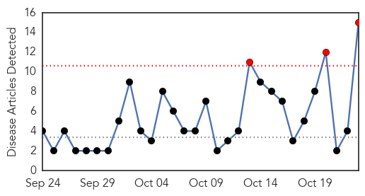
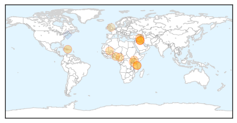
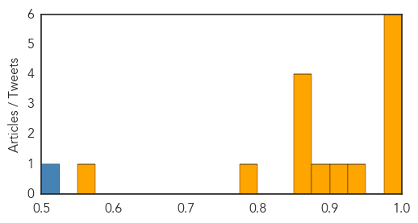
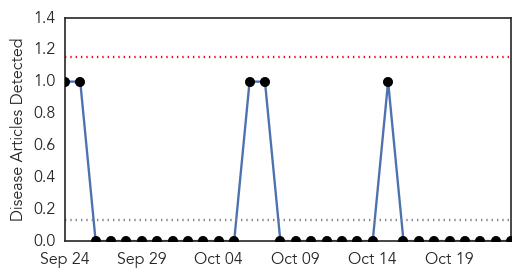

Cholera
30-Day Web Trend
3 alerts, 0 warnings

30-Day Twitter Trend
9 alerts, 0 warnings

Article Locations
Article Confidences
Top Articles:
- 0.998
- PAHO urges Member States to remain vigilant on Cholera.
- 0.997
- WHO: Nearly 5 000 cholera cases in Tanzania
- 0.997
- Nearly 5,000 cholera cases, 74 deaths in Tanzania: WHO
- 0.996
- Iraq set for cholera vaccine campaign amid fear of international spread: WHO
- 0.994
- Iraq set for cholera vaccine campaign amid fear of international spread: WHO
- 0.992
- Iraq set for cholera vaccine campaign: WHO
- 0.933
- Iraq's cholera outbreak exceeds 1,800 cases -health ministry
- 0.912
- Govt college hit by strange disease, 300 students hospitalised
- 0.890
- 300 Students Land In Hospital As Strange Illness Besiege Ekiti
- 0.863
- Thousands to Benefit from Free Rotary Health Services
- 0.863
- Rugunda: African Governments Must Embrace Digital Innovation
- 0.863
- MTN Uganda Wins Innovation Award in Y’ello Care Campaign
- 0.863
- Janet Moves to Support Karamoja’s Iconic Matany Hospital
- 0.780
- 300 students hospitalised in Ekiti over diarrhoea
- 0.567
- Nepal fuel crisis hampers relief response as winter approaches - Nepal
Top Tweets:
- 0.510
- RT: Or the Iraq War. Or the financial crisis. Or the cholera epidemic in Haiti. Or ... https://t.co/d2qlcMgoMT
Hemmorhagic Fever
30-Day Web Trend
0 alerts, 0 warnings

30-Day Twitter Trend
0 alerts, 0 warnings

Article Locations

Article Confidences

Top Articles:
-
No articles found for Oct 23, 2015
Top Tweets:
-
No tweets found for Oct 23, 2015